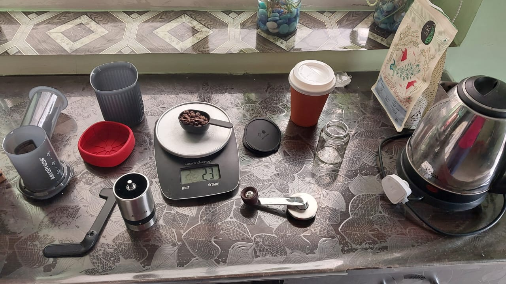

First Brew
19th Oct, 2025
After sipping instant coffee for years, I finally bade bye to it and bought an AeroPress!
Today, I brewed my first cup and it was okay—not that great! I messed up the water temperature. And that affected the brewing.
But that's okay, I'll brew better tomorrow. At least, I figured out what went wrong.
And that's not all. I also learned the variables at play in Aeropress brewing:
- Coffee-to-water ratio
- Grind size
- Brew time
- Water temperature
- Agitation
(Thanks to Aravind for walking me through all these)
Now that I know the variables, I'm gonna play around with them.
Here's my plan: I'll pick one variable out of the five and change only that while keeping everything else the same for the next 6 days. And I'll document my observations.
I'm gonna start with the variable: Grind size.
My coffee grinder has settings from 1 to 6. So for the next six days, I'll try a different grind size each day and log what happens.
On day seven, I'll look back and figure out which grind size I liked most.
Tomorrow's grind size: 6.
